Tharparkar Sindh, Pakistan
Discover spectacular landscape, ancient rocky hills and mystical deserts, a trip to Tharparker has everything you need for an unforgettable experience.
Take a glance into a 2,500 years old civilization which is a symbol of peace and harmony. From breathtaking views of Karoonjhar mountains
and vibrant villages to historical sites and fascinating heritage, Tharparkar is full of charming surprises and hidden beauty.
Tharparkar district is a 3-hour drive from Hyderabad and 5 hours from Karachi.
Places to Visit in Tharparkar


Guided Tours
Explore fantastic guided tours
Join 2 days tour for an unforgettable adventure and enjoy lunch and dinner at the most popular local restaurants and stay overnight in the iconic valley of Nagrparker. Admire the deep gorges and breath-taking view of the mountains.
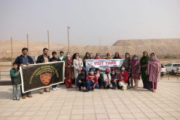
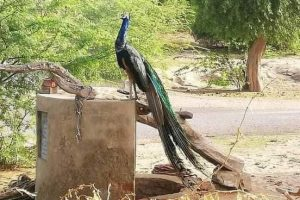
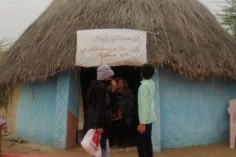
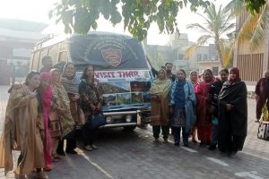
 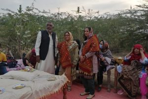
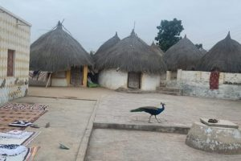
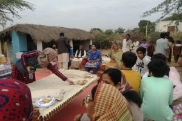
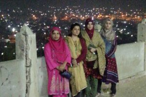
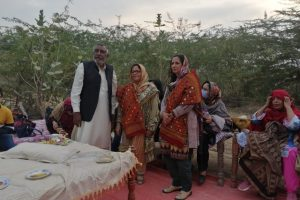
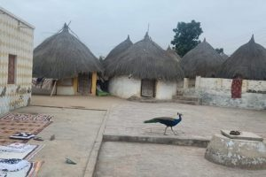
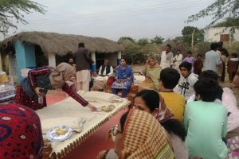
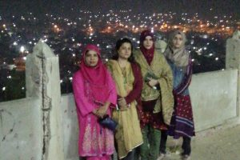
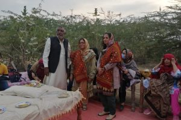
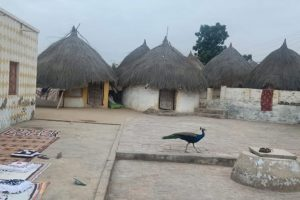
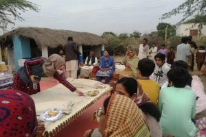
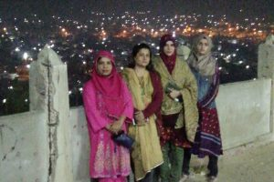